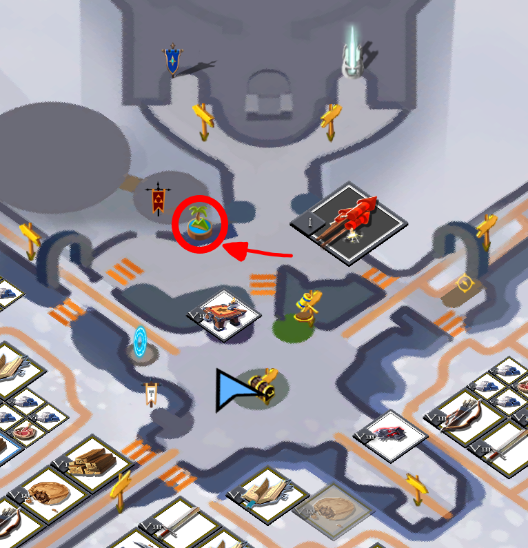
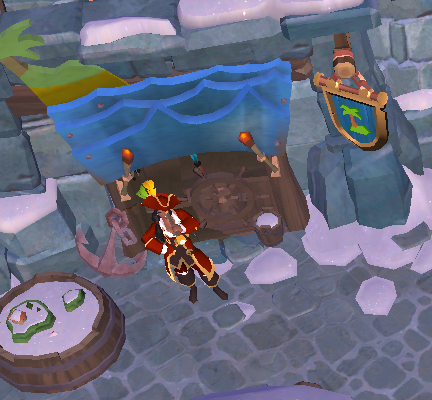
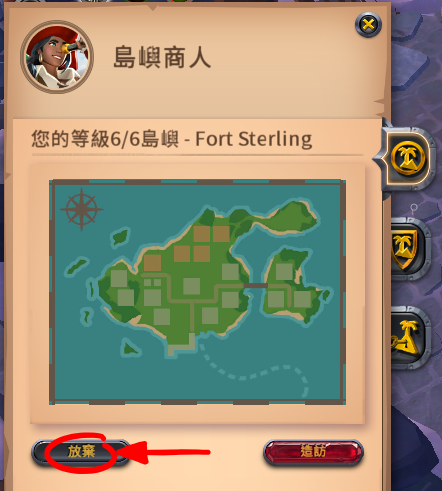

島嶼
個人島(皇家大陸)
如要購買個人島，必須先購買7天以上的會員。然後到皇家大陸其中一個主城找到島嶼商人。
 
按購買島嶼即可。
島嶼花費如下表：
| 島嶼等級 | 單次升級費用 | 累計升級費用 | 建築地 | 農地 |
| Lv1 | 18,750 |
18,750 |
1大 | 0 |
| Lv2 | 56,250 |
75,000 |
2大2小 | 1 |
| Lv3 | 187,500 |
262,500 |
4大2小 | 2 |
| Lv4 | 562,500 |
825,000 |
6大2小 | 3 |
| Lv5 | 1,875,000 |
2,700,000 |
8大2小 | 4 |
| Lv6 | 3,750,000 |
6,450,000 |
11大2小 | 5 |
島嶼等級達到 Lv2 才會解鎖農業商人。
小型建築地僅能建造屠夫或冶煉匠站點，大型建築地面積等於2*2小型建築地。
轉移
如果你需要把島嶼轉到其他城市，步驟如下。警告：島嶼上的建築、農地會在放棄島嶼後被清空，請先回收建築材料。
步驟一：前往你目前的島嶼所在城市，找島嶼商人按放棄按鈕。

步驟二：前往你想要遷移到的城市，找島嶼商人按購買按鈕。
需要支付 Lv1 島嶼費用(
18,750
)，購買後的島嶼等級會等於放棄前島嶼等級。
編輯紀錄
作者: runnywolf
最後編輯日期: 2022/7/29